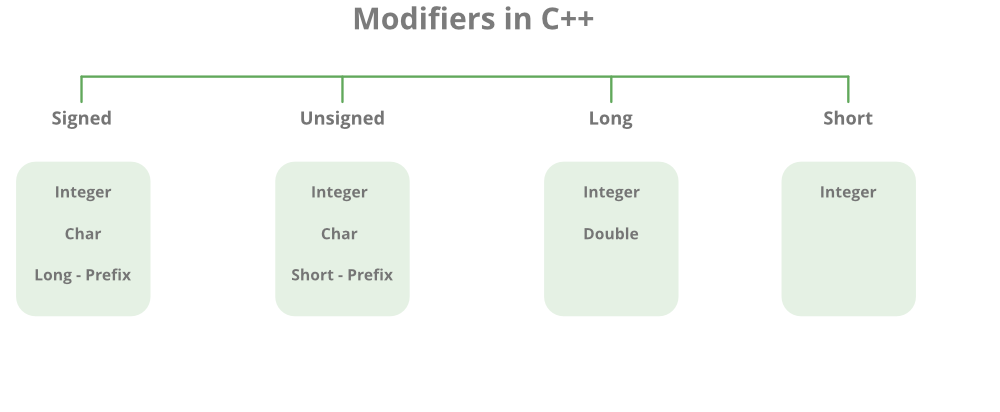

Type System in C++
Before we dive into type system let’s take a brief look at what we have as types in the language.
Rule to follow
In C++ we write a variable as follows:
DATA_TYPE VARIABLE_NAME = VALUE;
We can only declare a variable in one line and give it a value in other place in the code like so.
DATA_TYPE VARIABLE_NAME;
...
...
VARIABLE_NAME = VALUE;
Let’s take an example; we can declare a variable of type int to showcase the usage:
#include <iostream>
int main()
{
int number = 3;
std::cout << number << std::endl;
return 0;
}
Let’s run the code:
$ g++ main.cpp -o main && ./main
3
BTW you can get rid of std:: in front of commands by using namespace std; but I don’t recommend it ❌
#include <iostream>
using namespace std;
int main()
{
cout << "Hi" << endl;
}
Also the return statement is optional in main.
Think a little about this code ⁉️:
#include <iostream>
int main()
{
int number;
std::cout << number << std::endl; // ??
number = 5;
std::cout << number << std::endl;
return 0;
}
Types in C++
In short (as mentioned before) what types do to variables don’t really matters, what matters is the size of the type that is allocated in memory.
The following is a list of most data types in the language with its size:
char- - - - - 1 bytebool- - - - - 1 byteshort- - - - 2 bytesint- - - - - - 4 bytesfloat- - - - 4 byteswchar_t- - 4 bytesdouble- - - 8 byteslong- - - - - 8 bytes
A very common way is to use the sizeof operator to know the size in bytes.
#include <iostream>
int main()
{
std::cout << sizeof int << std::endl;
}
Also we can use it as follows:
#include <iostream>
int main()
{
std::cout << sizeof(int) << std::endl;
}
We can also save some headaches by #include <cinttypes>.
It gives us a variety of types to use indicated by size of bits like uint8_t.
Datatypes Modifiers

! Note: be smart while using these modifiers! there’s no such thing as long float !
Try out this code:
// C++ program to sizes of data types
#include <iostream>
using namespace std;
int main()
{
cout << "Size of char : " << sizeof(char) << " byte" << endl;
cout << "Size of int : " << sizeof(int) << " bytes" << endl;
cout << "Size of short int : " << sizeof(short int) << " bytes" << endl;
cout << "Size of long int : " << sizeof(long int) << " bytes" << endl;
cout << "Size of signed long int : " << sizeof(signed long int) << " bytes" << endl;
cout << "Size of unsigned long int : " << sizeof(unsigned long int) << " bytes" << endl;
cout << "Size of float : " << sizeof(float) << " bytes" << endl;
cout << "Size of double : " << sizeof(double) << " bytes" << endl;
cout << "Size of wchar_t : " << sizeof(wchar_t) << " bytes" << endl;
return 0;
}
Possible output on x86_64 system:
Size of char : 1 byte
Size of int : 4 bytes
Size of short int : 2 bytes
Size of long int : 8 bytes
Size of signed long int : 8 bytes
Size of unsigned long int : 8 bytes
Size of float : 4 bytes
Size of double : 8 bytes
Size of wchar_t : 4 bytes
More Examples
Let’s use char:
#include <iostream>
int main()
{
char letter = 'M';
std::cout << letter << std::endl; // M
}
// note that the character case we use single quotes!
Think About This Code
#include <iostream>
int main()
{
int letter1 = 'A';
char letter2 = 65;
std::cout << letter1 << ", " << letter2 << std::endl; // ??
}

ASCII Reference: https://en.wikipedia.org/wiki/ASCII
ASCII Table: https://www.asciitable.com/
Unicode Reference: https://en.wikipedia.org/wiki/Unicode
Funny Webite: https://home.unicode.org/
! ASCII stands for: American Standard Code for Information Interchange !
Let’s Think About The Following Code
#include <iostream>
int main()
{
double a = 5.5;
float b = 5.5;
std::cout << sizeof(a) << ", " << sizeof(5.5) << std::endl; // 8, 8
std::cout << sizeof(b) << ", " << sizeof(5.5) << std::endl; // 4, 8 ??!
std::cout << sizeof(5.5f) << std::endl; // 4
// from this code we know that assigning 5.5 without an 'f' unit
// will assign a double not a float
}
So the fix for this code is:
...
float b = 5.5f;
...